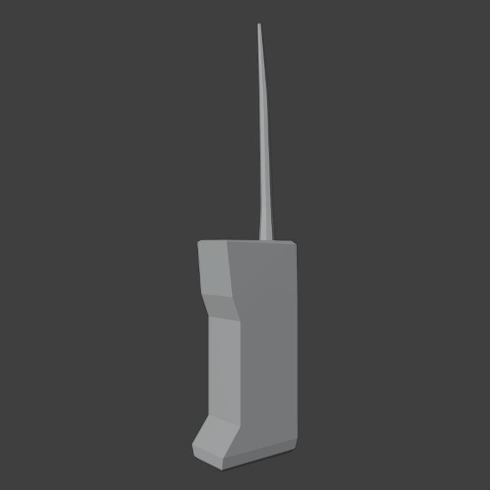
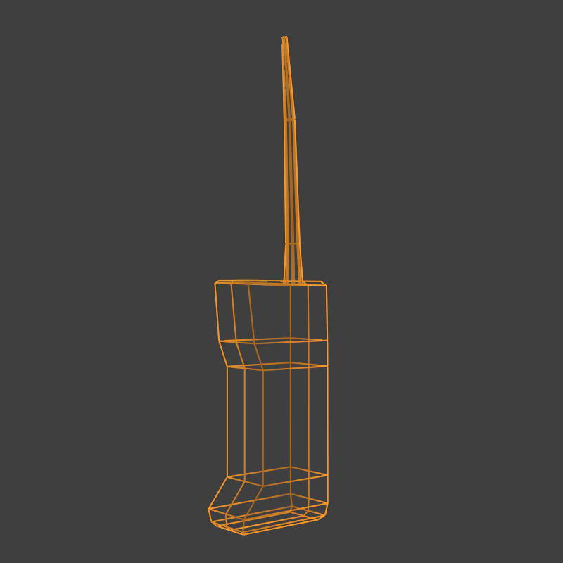
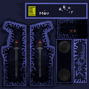
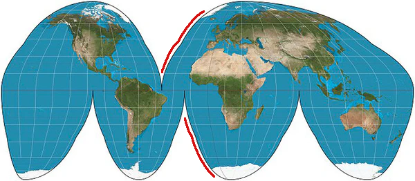
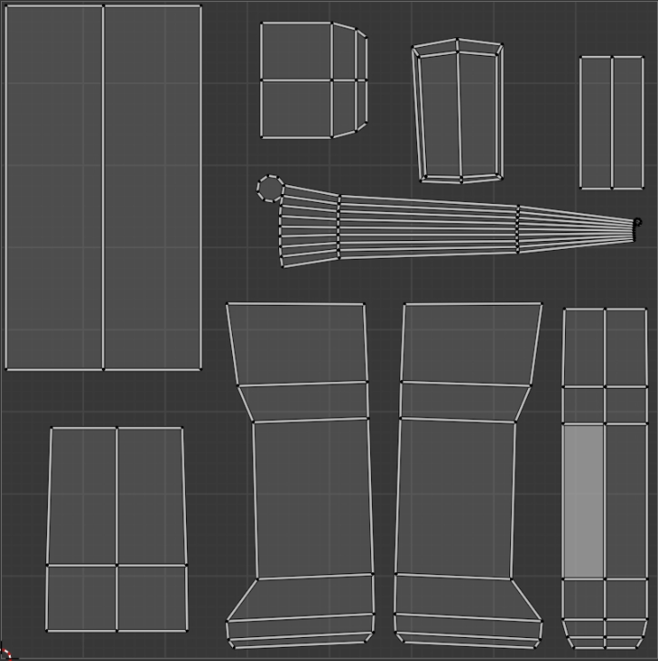
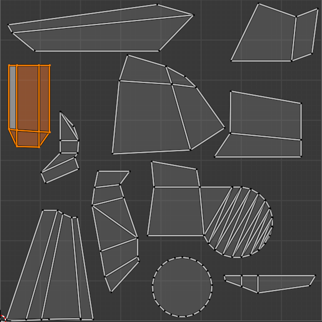
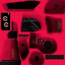

Now we have the geometry of our brick:


How do we give it color?
3D models can have 2D images (maps) attached, giving them color (albedo), roughness, and normal values:

To associate those maps with the geometry, we need to assign the geometry to regions in 2D space, in a process called UV unwrapping:
The first step in UV unwrapping is marking edge seams. The faces with edges that are marked as seams won't be continuous on the map, like in this projection of Earth:

This is a necessary step to prevent the map from being overly stretched. This is what marking edge seams looks like in Blender:
I should've left the sides, bottom and top in one piece to allow the texture to wrap all the way around- you'll want to mark edges that are one solid color, or in less visible positions on the model.
Once that's done, the geometry can be unwrapped. There are a few different automated processes for unwrapping, each with different results. I typically do a regular unwrap and resize and reposition the geometry until I get it laid out how I want:

UV unwrapping is often the most tedious part of the process, requiring a lot of back and forth between texturing to ensure the maps line up as they should.
There are a few other considerations, too, like the scaling of the islands on the UV map. Typically, you'd want to ensure all of the islands are close to the same size, but intentionally making an island bigger can allow you to fit more detail. For example, notice how big the dash is in relation to the rest of the bike so that gauges can be fit in the gauge cluster:

